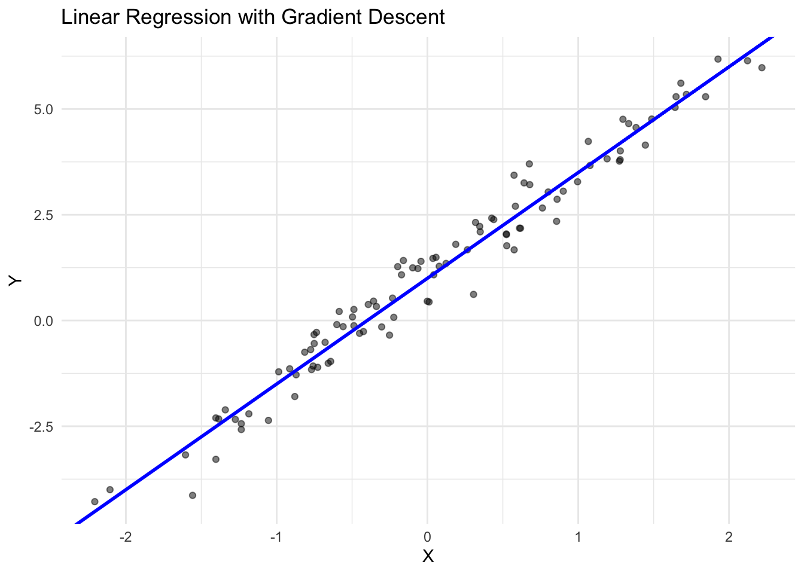
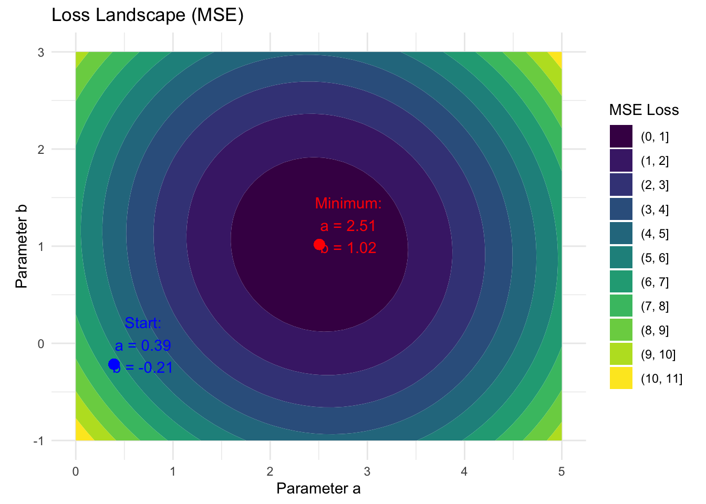

library(torch)
a <- torch_tensor(2, requires_grad = TRUE)
a$requires_grad[1] TRUEb <- torch_tensor(1, requires_grad = TRUE)
x <- torch_tensor(3)TODO: * is with_no_grad covered enough?
Automatic differentiation (autograd) is one of torch’s key features, enabling automatic computation of gradients for optimization tasks like training neural networks. Unlike numerical differentiation which approximates gradients using finite differences, autograd computes exact gradients by tracking operations as they are performed and automatically applying the chain rule of calculus. This makes it possible to efficiently compute gradients of complex functions with respect to many parameters - a critical requirement for training modern neural networks. Autograd works by building a dynamic computational graph of operations, where each node represents a tensor and each edge represents a mathematical operation.
To use autograd, tensors must their requires_grad be TRUE. This can either be set during construction, but also changed afterwards using the in-place modifier $requires_grad_(TRUE). In the context of deep learning, we track the gradients of the weights of a neural network. The simpleste “neural network” is a linear model where we have slope \(a\) and bias \(b\) and a single input \(x\).
The forward pass is defined as: \(\hat{y} = a \times x + b\)
We could be interested in how the prediction \(\hat{y}\) changes for the given \(x\) when we change the weight \(a\) or the bias \(b\). We will later use this to change the weights \(a\) and \(b\) to lead to better predictions. To write down the gradients, let \(u = a \times x\) denote the temporary tensor from the linear relationship.
library(torch)
a <- torch_tensor(2, requires_grad = TRUE)
a$requires_grad[1] TRUEb <- torch_tensor(1, requires_grad = TRUE)
x <- torch_tensor(3)We can use the weights and input to perform a forward pass:
u = a * x
y = u + bWhen you perform operations on tensors with gradient tracking, torch builds a dynamic computational graph. In the figure below:
graph TD
a[a] --> mul[Multiply]
x[x] --> mul
mul --> u[u]
u --> add[Add]
b[b] --> add
add --> y[y]
%% Gradient flow
y_grad[dy/du = 1, dy/db = 1] -.-> y
u_grad[du/da = x] -.-> u
a_grad[dy/da = dy/du * du/dx = 1 * x] -.-> a
b_grad[dy/db = 1] -.-> b
%% Styling
classDef input fill:#a8d5ff,stroke:#333;
classDef op fill:#ffe5a8,stroke:#333;
classDef output fill:#a8ffb6,stroke:#333;
classDef grad fill:#ffa8a8,stroke:#333,stroke-dasharray: 5 5;
classDef intermediate fill:#d5a8ff,stroke:#333;
classDef nograd fill:#e8e8e8,stroke:#333; %% New class for x
class a,b input;
class mul,add op;
class y output;
class u intermediate;
class y_grad,add_grad,u_grad,a_grad,b_grad grad;
class x nograd; %% Apply new class to x
Each (intermediate) tensor knows how to calculate gradients with respect to its inputs.
y$grad_fnAddBackward0u$grad_fnMulBackward0In order to calculate the gradients \(\frac{\partial y}{\partial a}\) and \(\frac{\partial y}{\partial b}\) we can simply call these derivative functions, traverse the graphs and multiply the individual derivatives according to the chain rule. In torch this is done by calling $backward() on y: we simply call $backward() on y. The gradients are then accessible in the $grad field of the tensors a and b:
# Compute gradients
y$backward()
# Access gradients
print(a$grad) # dy/da = x = 3torch_tensor
3
[ CPUFloatType{1} ]print(b$grad) # dy/db = 1torch_tensor
1
[ CPUFloatType{1} ]In the next section we will show how we can use gradients to train a simple linear model.
We can use autograd to fit a simple linear regression model. Let’s first generate some synthetic data:
library(ggplot2)
# Set random seed for reproducibility
torch_manual_seed(42)
# Generate synthetic data
n <- 100
a_true <- 2.5
b_true <- 1.0
# Create input X and add noise to output Y
X <- torch_randn(n)
noise <- torch_randn(n) * 0.5
Y <- X * a_true + b_true + noise
First, we randomly initialize our parameters a and b.
# Initialize parameters with random values
a <- torch_randn(1, requires_grad = TRUE)
b <- torch_randn(1, requires_grad = TRUE)We can also visualize the loss landscape with respect to \(a\) and \(b\):

We can optimize the parameters \(a\) and \(b\) to converge to the minimum by using gradient descent. Gradient descent is a fundamental optimization algorithm that helps us find the minimum of a function by iteratively moving in the direction of steepest descent.
The gradient of a function points in the direction of steepest increase - like pointing uphill on a mountainous terrain. Therefore, the negative gradient points in the direction of steepest decrease - like pointing downhill. Gradient descent uses this property to iteratively:
Note that the gradient only tells us in which direction we have to go, not too far. The length of the step should not be:
The general update formula for the weights \(a\) and \(b\) is:
\(a_{t+1} = a_t - \eta \frac{\partial L}{\partial a_t}\) \(b_{t+1} = b_t - \eta \frac{\partial L}{\partial b_t}\)
where \(\eta\) is the learning rate and \(L\) is the loss function.
In practice, when dealing with large datasets, computing the gradient over the entire dataset can be computationally expensive. Instead, we often use Stochastic Gradient Descent (SGD), where we:
While the gradients from SGD are noisier than full gradient descent, they:
The batch size is another hyperparameter - larger batches give more stable gradients but require more computation, while smaller batches introduce more noise but allow for more frequent updates.
We start by implementing a single gradient step. Note that if we would repeatedly call loss$backward(), the gradients in a and b would accumulate, so we set them to 0 before performing the update. The return value of the upgrade will be the parameter values and the loss so we can plot them later. Also note that we mutate the parameters a and b in-place (suffix _).
update_params <- function(X_batch, Y_batch, lr, a, b) {
# perform forward pass, calculate loss
Y_hat = X_batch * a + b
loss = mean((Y_hat - Y_batch)^2)
# calculate gradients
loss$backward()
# we don't want to track gradients when we update the parameters.
with_no_grad({
a$sub_(lr * a$grad)
b$sub_(lr * b$grad)
})
# make sure gradients are 0
a$grad$zero_()
b$grad$zero_()
list(
a = a$item(),
b = b$item(),
loss = loss$item()
)
}library(data.table)
# hyperparameters
lr <- 0.02
epochs <- 10
batch_size <- 10
# Split data into 10 batches of size 10
batches <- split(sample(1:100), rep(seq_len(batch_size), length.out = 100))
history <- list()
for (epoch in seq_len(epochs)) {
for (step in 1:10) {
result = update_params(X[batches[[step]]], Y[batches[[step]]], lr, a, b)
history = append(history, list(as.data.table(result)))
}
}
history = rbindlist(history)This example demonstrates how we can use torch’s autograd to implement gradient descent for fitting a simple linear regression model. The dashed red lines show the progression of the model during training, with increasing opacity for later steps. The Blue line is the true relationship.
We can also visualize the parameter udpates over time:
Of course, there exist better solutions for estimating a simple linear model, but the example demonstrated how we can make use of an autograd system to estimate the parameters of a model.